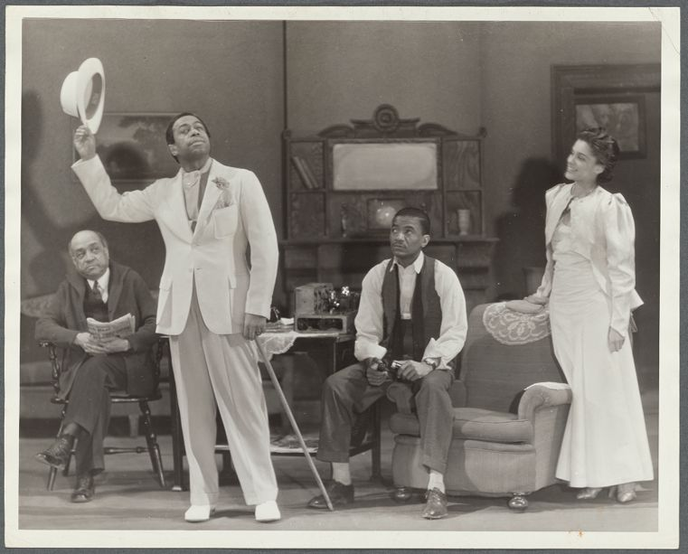
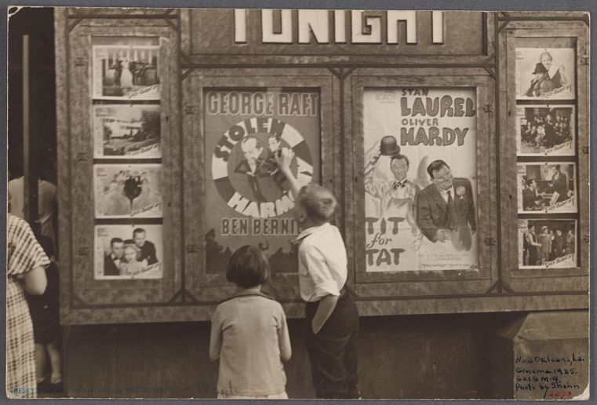

Arts and Culture organizations speak the language of mission. Capital speaks the language of numbers.
We are the translation layer. We transform macro-data, funding systems, and regional economic signals into open diagnostic architecture—building the transparency and resilience cultural ecosystems need to survive and grow.
CIX Cultural is a public benefit venture studio founded to protect and stabilize the civic and cultural sectors. We operate on a clear premise: the structural forces, funding asymmetries, and systemic frictions that destabilize cultural markets and their constituents can be quantified, visualized, and actively managed.
Utilizing the foundational analytical rigor pioneered by our commercial sister entity, Ingenio CIX, we deploy proprietary diagnostic engines to translate dense macro-data into open, high-fidelity infrastructure tools. Our focus is structural transparency, building benchmarks and resilience metrics for performing arts networks, cultural workers, and civic ecosystems.
While our work is grounded in systems theory and quantitative analysis, it is equally informed by cultural practice. We draw inspiration from the Cuban clave—the underlying rhythmic pattern that allows complex musical expression to remain coherent. That same principle guides our approach: identifying the stable structures that make civic and cultural systems more legible, resilient, and adaptive.

Diagnostic architecture that decentralizes institutional intelligence, granting labor networks merited footing in funding landscapes, while providing decision frameworks that empower everyday citizens to navigate municipal systems.
High-density data modeling and index systems that track structural risk, capitalization limits, and resource distribution across cultural markets and civil asset ecosystems.

Archival-grade terminal interfaces built to make massive datasets immediately scannable, legible, and actionable for administrators, researchers, and citizens.
A specialized sector-diagnostic engine that adapts advanced corporate finance frameworks to map structural volatility and value opportunities across performing arts markets. The ORI isolates institutional friction to calculate real-time runway, cost floors, and capital durability metrics for civic infrastructure.
Cultural sector intelligence platform implementing the Organizational Resilience Index (ORI). Assesses structural risk, capitalization limits, and systemic friction across performing arts networks and civic infrastructure for administrators, philanthropic foundations, and labor networks.
ArtDaq ↗Citizen-facing decision architecture for pro se litigants navigating housing appeals. Translates complex municipal procedural pipelines into clear, actionable legal checkpoints — shielding unrepresented tenants from systemic defaults.
courtnav.vercel.app ↗Economic Capacity Index & Organizational Resilience Index. Combined quantitative diagnostic backends mapping capitalization minimums and risk vectors across civic ecosystems.
Core Engine ArchitectureProgressive distribution protocol designed to stream high-density public data feeds and index modules adaptively across low-bandwidth or volatile structural environments.
Streaming ProtocolWe act as technical advisors and structural underwriters for the public good. CIX Cultural partners directly with administrative agencies, art and culture leaders, legacy networks, and legal networks to stabilize modern civic frameworks.
By translating operational data silos into scannable diagnostic architectures, we transform unreadable policy into direct public empowerment.
For philanthropic underwriting, strategic research collaborations, municipal integration, or institutional index access, reach us directly. We respond to inquiries from cultural sector administrators, foundational boards, policy networks, and labor advocates seeking to deploy data-driven resilience models.
studio@cixcultural.org →